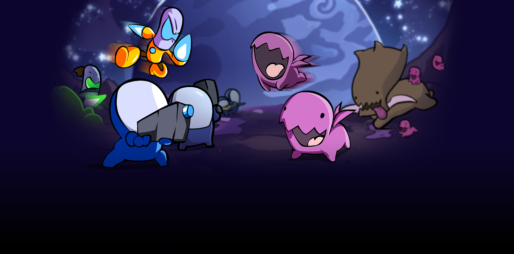
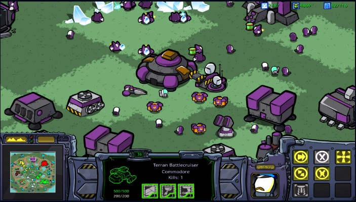
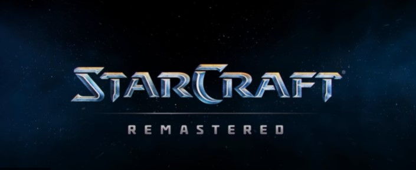

STARCRAFT: CARTOONED - YA DISPONIBLE
¡Revivid la experiencia de StarCraft, un clásico de la estrategia en tiempo real, con nuevos y adorables gráficos de dibujos animados realizados por Carbot Animations! Tanto si sois veteranos del sector Koprulu como si es vuestra primera visita, StarCraft: Cartooned es una fantástica manera de disfrutar de StarCraft. 
StarCraft: Cartooned recrea todas las unidades, estructuras, mapas, menús y misiones con el entrañable estilo artístico de Carbot Animations. Deleitaos con el aspecto totalmente nuevo de la épica campaña de un jugador, desatad el caos animado en línea y enfrentaos a otros jugadores en la jerarquía multijugador, o uníos a vuestros amigos en partidas personalizadas, aunque no tengan StarCraft: Cartooned. 
ACTUALIZACIÓN DE DESARROLLO DE STARCRAFT: REMASTERED N.º4
Hoy os presentamos la última actualización de desarrollo de StarCraft: Remastered. El ingeniero jefe de software Grant Davies os resume los avances recientes de SCR, comparte lo que significa SC20 para él y muestra algunas de las características que llegarán con el parche 1.22, incluyendo un nuevo sistema de liga.
